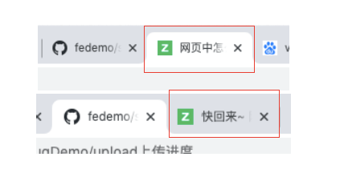

JS怎么监听浏览器tab页切换？浏览器tab页切换时更改标题
这篇文章发布于 2020/03/02，归类于 Javascript
标签：
浏览器tab切换事件监听，visibilitychange，js 页面可见性API
当用户点击了浏览器其他tab页离开页面，或者从其他tab页进入当前页，都会触发visibilitychange事件，根据docuemnt.hidden可以判断是否离开或回来，我们可以修改标题达到可视化的一个效果

// 实现tab间切换时，隐藏页面title改变功能
// JS高程3 Page Visibility API(页面可见性API)
// 参考：https://www.yuque.com/guoqzuo/js_es6/nocthb#0cf7a8b7
var title = document.title;
document.addEventListener('visibilitychange', function (event) {
document.title = document.hidden ? '快回来 ~ ' : title
if (document.hidden) {
// 做一些暂停操作
} else {
// 开始操作
}
}, false)